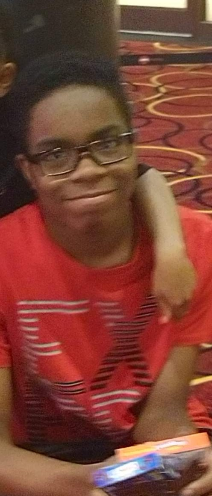

I was raised in West Philadelphia, where I went to Harambee Charter School. It was there that I learned how to play the recorder and the game of chess. I earned many awards such as honor roll and never went below a C. I always look for opportunities to learn more about engineering and STEM. I read books and I like to experiment with toys and monitors in my room. I do these things because my main goal is to become a mechanical engineering entrepreneur.
Outside of school, I went to a program called th Polymer Play Lab at the Science Center. I learned how to make bioplastics, use scoldering irons, and learned more about electricity. The main point of the program was to teach us about how everyday things like plastic affect the environment. I later went to another program at Villanova, where we learned more about the process of engineering and we were able to meet more successful people. We built small cars out of solar power, mousetraps, and LEGO's and we had to compare them. We go to ths program for the remainder of our time at Hig School. Now, I'm at a program called SMASH, where we learn about STEM, the marketing business, and economics.